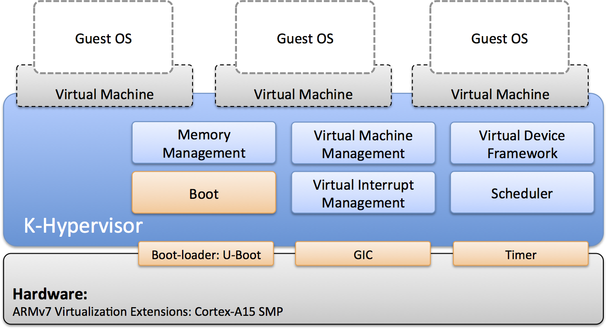
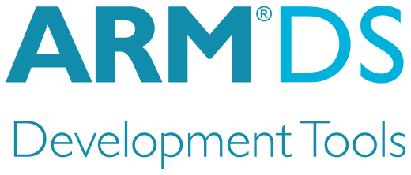
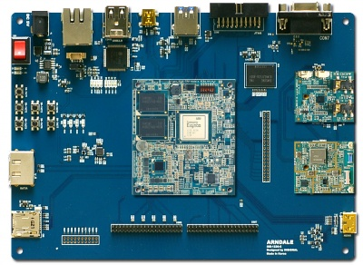

Welcome to K-hypervisor git.
K-hypervisor is an open-source type-1 hypervisor, which aims at providing a monolithic, light-weight, portable, and flexible virtualization solution. It provides a high performance for ARMv7 Virtualization Extensions.
K-hypervisor primarily supports Full virtualization hence, supports a wide range of unmodified Guest operating systems such as Linux and RTOS, and the Bare Metal Application.
It has most features expected from a modern hypervisor, such as: IO device emulation framework, Pass through hardware access and many more.
K-hypervisor is Hardware Accelerated Hypervisor, so it supprots ARM GICv2, ARM Generic Timer and 2-Stage Address Translation.
Architecture
The hypervisor consists of a few sub-systems and device drivers. On a target hardware to run a virtualized software system it needs other software components such as boot-loader, software images for guest software such as Linux and RTOS, and the hypervisor image. A boot-loader is responsible for loading the software images of the hypervisor and guest software to designated address in the memory and triggering the very first execution of the hypervisor image in the memory. It is up to the boot-loader use on the target hardware whether to load the software images from the Flash Memory, an SD Card or any storage media it prefers.
Features
Hardware Acclerated Hypervisor
- ARMv7 Virtualization Extensions
- Hyp Mode, 2-Stage Address Translation, and GICv2
- No Guest Modification Required
- Each VM Reserves Exclusive Access to Dedicated Hardware Devices
Supported architecture : ARM Cortex-A15
Supported Target Hardware
- ARM RTSM VE - FastModels
 - InSignal’s Arndale Board – Exynos 5250

Watch the video
Document page
Contact
Having trouble with our source? Contact kesl@kookmin.ac.kr and we’ll help you sort it out. If you need more information, visit our Labs homepage http://embedded.kookmin.ac.kr/